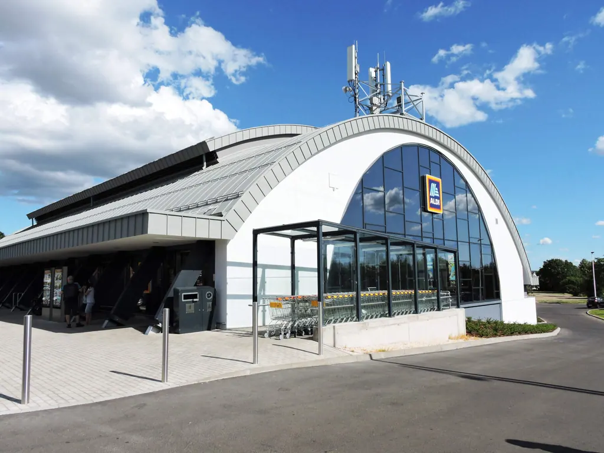
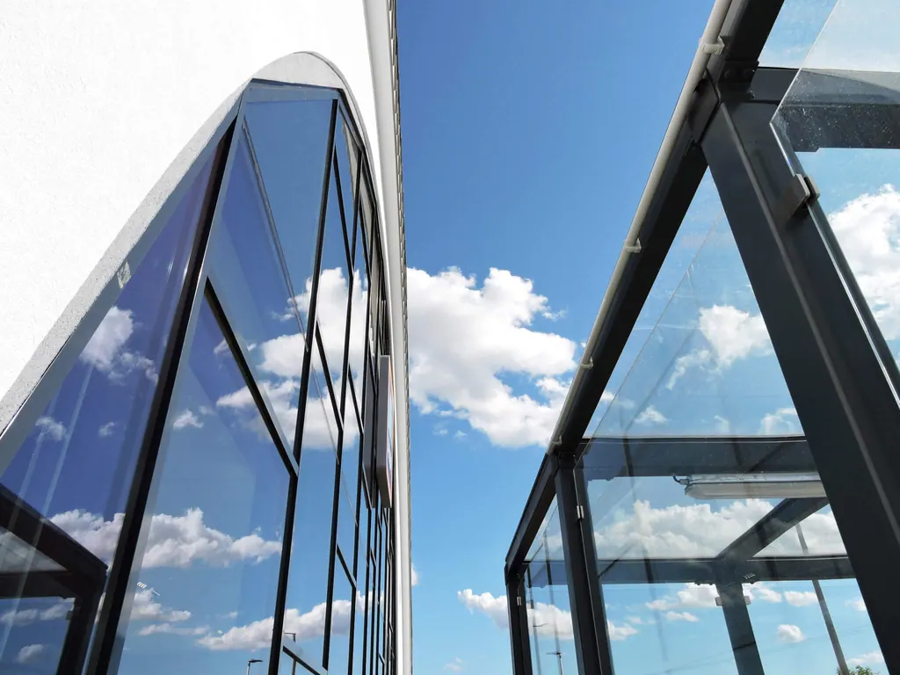
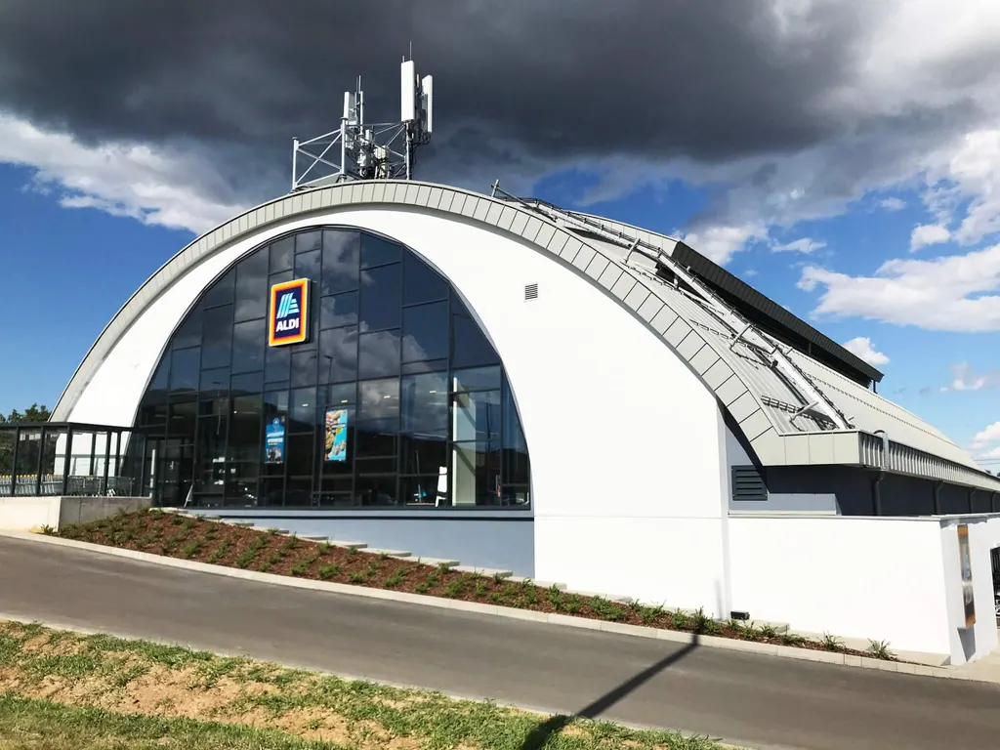

Referenzen/05 / 49Pécs, Umbau einer ALDI-FilialeTypIndustriebau, GewerbebauStilIndustrialBilder4 02 / 0403 / 0404 / 04 ZurückVillány, Weingut Alle Referenzen WeiterBudapest, Büro in der Brassai Sámuel utca